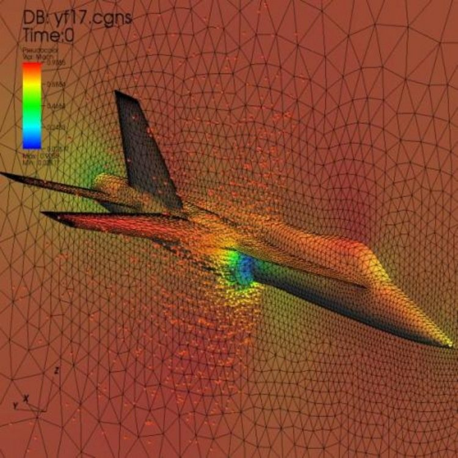

CFD, Lattice Boltzmann y SPH: tres maneras de simular un fluido
Las ecuaciones de Navier-Stokes se conocen desde el siglo XIX, y para casi todo lo interesante no se pueden resolver con lápiz y papel. Un ala, un corazón o el tiempo de mañana se calculan con una computadora. Pero «resolver numéricamente» esconde una decisión de fondo: qué representa cada número en la memoria. Una malla, una red de partículas ficticias o un montón de bolitas. Cada elección tiene su mundo.
Un flujo turbulento tiene remolinos de todos los tamaños, desde los del objeto hasta los de la escala de Kolmogorov, donde la viscosidad disipa la energía. Para representarlos todos, la malla debe ser más fina que esa escala. Según la teoría de Kolmogorov, el cociente entre el tamaño grande L y el chico η crece como Re3/4. En tres dimensiones, eso da un número de puntos (un cálculo propio):
Con Re = 10⁶, N ≈ 3 × 10¹³ puntos, y eso sin contar el paso de tiempo (un cálculo propio). Por eso, para un auto o un avión reales, no se calcula todo: se modelan las escalas chicas. Los grandes supuestos de un cálculo industrial suelen estar ahí (un comentario propio).
Una revisión comparativa de J. Moradi, A. Mahmoudzadeh Andwari y J. Könnö repasa cuatro familias de métodos [1]. La primera, la de los volúmenes finitos, divide el dominio en volúmenes de control y se concentra en las leyes de conservación y en los flujos a través de las caras [1]. Es la versión numérica de las leyes de conservación: lo que entra en una celda menos lo que sale es lo que se acumula. Es reconocida por su robustez, sobre todo en geometrías complejas [1].
El método Lattice Boltzmann (LBM) es un enfoque mesoscópico: no resuelve directamente las ecuaciones del fluido, sino que simula el fluido mediante interacciones de partículas en una red [1]. Cada celda guarda cuántas «partículas ficticias» van en cada dirección; en cada paso, chocan y se mueven a la celda vecina (una descripción simplificada). De ese juego de reglas locales surgen las ecuaciones del fluido a gran escala. Su paralelismo intrínseco y su facilidad para condiciones de contorno complejas lo hacen adecuado para flujos multifásicos y medios porosos [1].
La cancha y la tribuna: volúmenes finitos es como contar a la gente que entra y sale de cada sector de una cancha. Lattice Boltzmann es darle a cada persona una regla simple y dejar que emerja el movimiento de la multitud. SPH es seguir con la cámara a cada grupo, adonde sea que vaya.
La hidrodinámica de partículas suavizadas (SPH, por su sigla en inglés) representa el fluido como un conjunto de partículas, y sus propiedades se suavizan entre partículas vecinas con una función de núcleo [1]. Como las partículas se mueven con el fluido, no hace falta una malla [1]. Por eso sobresale en flujos con superficie libre, simulaciones astrofísicas e interacción entre fluido y estructura [1]: una ola que rompe o una estrella que colapsa, donde el fluido no se queda en un lugar.
Los métodos espectrales describen las funciones como suma de funciones base, como las de Fourier o Chebyshev, y logran una altísima precisión [1]. Se prefieren para problemas con soluciones suaves y condiciones periódicas, como simulaciones de turbulencia y propagación de ondas [1].
Una simulación no es un experimento: un resultado numérico depende de la malla, del modelo y de las condiciones de borde. Por eso, una parte central del oficio es comprobar el resultado contra casos conocidos y mediciones. Una imagen colorida puede estar equivocada (un comentario propio).

Simular un fluido es elegir qué representar. Volúmenes finitos conserva cantidades en una malla, Lattice Boltzmann hace emerger el fluido de reglas locales, SPH sigue partículas y los métodos espectrales buscan precisión con funciones suaves. Ninguno gana siempre: el costo de resolver todas las escalas obliga a elegir, y parte de la física siempre queda en un modelo.
Pregunta para la comunidad: Si duplicás el número de Reynolds, ¿por cuánto se multiplican los puntos de la malla? Teniendo en cuenta que el paso de tiempo también se achica, ¿cuántos años de avance de las computadoras te costaría?